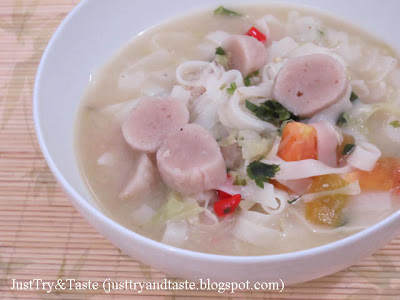

Russian Salad
Komposisi dressing-nya sendiri bisa disesuaikan dengan selera.
Jika anda menghindari menggunakan banyak mayonnaise di dalam salad maka kurangi porsi yang saya sertakan di bawah atau gantikan dengan yogurt untuk versi yang lebih sehat.
Walau mustard akan memberikan rasa sedikit menyengat yang khas selayaknya wasabi di sushi dan membuat dressing menjadi segar, namun skip saja jika anda tidak memilikinya di rumah.
Selebihnya membuat makanan ini sangat mudah dan cepat tentunya.
Berminat? Berikut resepnya ya. learn more..

Kwetiau Rebus Kuah Bakso
Nah, adonan ikan yang telah di rebus matang ini selain sedap jika digoreng menjadi seperti kerupuk juga bisa diiris-iris dan
dicemplungkan ke dalam makanan berkuah seperti kwetiau ini.
Anda tentu saja bisa menggantinya dengan bakso ikan biasa atau dengan bakso sapi. Mantap! Yuk, kita buat saja.
learn more..

Nugget Ayam Dengan Wortel
Berbeda dengan resep cake dari luar yang sering saya gunakan sebagai bahan referensi.
Rata-rata resep cakenya menggunakan telur dengan jumlah yang 'sedikit'.
Kecuali mungkin untuk resep Angel Chiffon Cake yang memang memerlukan putih telur dalam jumlah yang banyak.
learn more..
Roti Pisang 5 Bahan
Anyway, cake ini sangat mudah dibuat jika anda memperhatikan dan mengikuti proses yang saya berikan di bawah dengan baik.
Dan jika anda bertanya apakah cake ini bisa dikukus? Saya rasa bisa, dengan catatan skip bagian mengiris permukaan cake kala cake baru
setengah matang ya.
Karena membuka kukusan saat cake setengah matang akan membuat uap air dalam kukusan berkurang dan membuat cake enggan mengembang.
Berikut resep dan prosesnya yang simple.

Bolu Kukus Coklat

Bistik Ayam

Creamy Mashed Potato